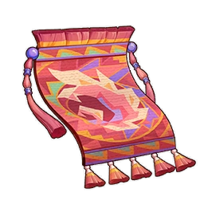

Natlan · Books & Literature
Fires of Autumn Twilight
This three-volume Flower-Feather Clan scroll weaves a dragon hunt together with a later succession and marriage story, while its own description says the tales were joined at an unknown time.

A Flower-Feather Clan scroll
Fires of Autumn Twilight is a three-volume book collection from Natlan. Each volume describes the source as a woven scroll from the Flower-Feather Clan and says it combines two stories from different eras at an unknown time. Amazolli sells the set at Idukan's Trove.
Across the volumes, the two narrative strands alternate: one follows a dragon hunt, while the other follows a young woman's planned marriage and a fire at the clan storehouse.
The earlier strand: a dragon hunt
The first story follows a woman who has hunted a giant dragon for years. The scroll says her mother had wounded it earlier; the daughter later lures it into a narrow cave where liquid phlogiston catches fire and finishes the hunt.
The story never names the dragon or gives it a species. Its identity beyond the scroll remains unconfirmed by this collection alone.
The storehouse and the planned marriage
In the other strand, the heroine's childhood companion returns as a Recording Officer of the Grand Alliance. He has come to take the Flower-Feather Clan's banner in the Holy Sovereign's name and expects to marry her, then lead the clan himself.
He reads her silence as compliance. She has hidden oil in the storehouse, sets it alight with both inside, and the investigation finds their bodies among the ruins. The narrative frames the fire as her answer to his plan, while leaving the scene tragic rather than triumphant.
Lianca's unnamed second daughter
The marriage story calls its heroine Lianca's soft-hearted second daughter. The dragon strand describes the hunter as a daughter whose mother had wounded the beast, and the later warehouse scene contains the dragon's skull as a trophy from her hunt. These repeated details suggest the strands center on the same unnamed woman.
The scroll does not give her personal name or exact dates, and it does not explain how the two stories were originally related. Its own description says they came from different eras and were joined at an unknown time.
The Holy Sovereign and Och-Kan
The book does not name the Holy Sovereign. In a separate set of interactable notes at Ochkanatlan, Och-Kan uses that title; reading the two records together places the storehouse plot in the political world associated with his rule.
This is a cross-source identification. The title inside Fires of Autumn Twilight remains unnamed, so the book alone does not establish the officer's identity or the story's exact place in Och-Kan's chronology.
What the woven scroll establishes
The collection establishes its Flower-Feather Clan attribution, the two-era framing, Lianca's succession context, and a dragon hunt tied to a later storehouse fire. Its Dragonbolt Chronicles achievement confirms the three-volume set as a collection.
The daughter's name, the dragon's identity, the officer's name, the original tellers, and the date when the stories were joined remain unknown. The scroll preserves a literary account; its description does not certify every event as a dated historical record.
This is an original CoreGG reading guide, not an official HoYoverse article or a reproduction of the game text. Source links below identify the records used so you can check the original context.
Sources & references
Check these sources for the original game text and reference trail.